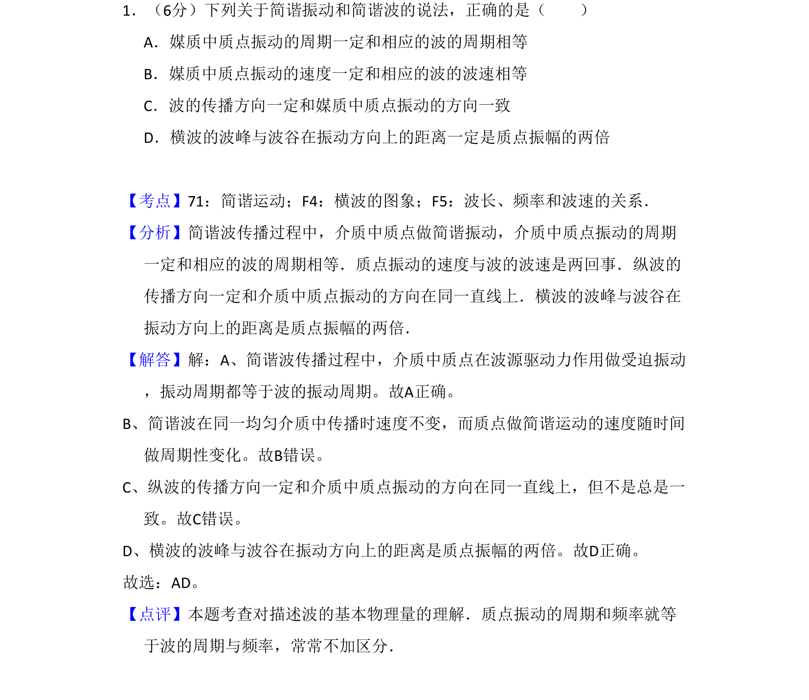
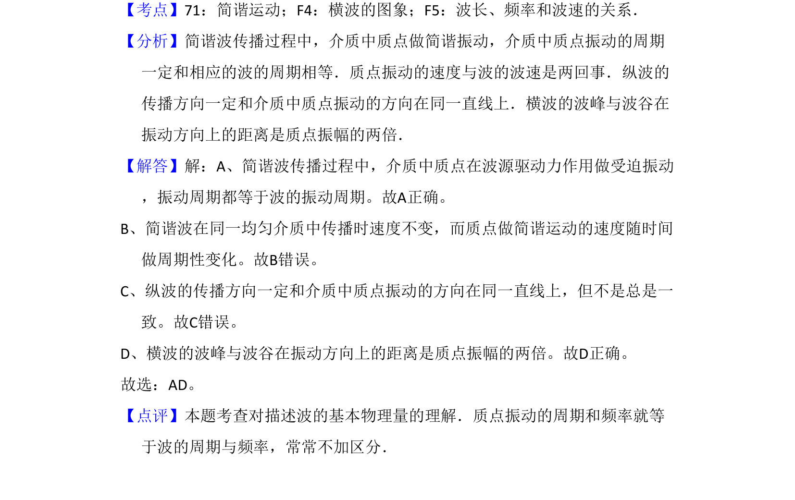

考点：简谐运动 横波的图象 波长 频率和波速的关系

简谐振动与简谐波中周期、波速、传播方向及振幅关系的概念辨析

📄 原 PDF 第 1 页：
素材/真题/吉林/2008-2024·（吉林）物理高考真题/2009年高考物理试卷（全国卷Ⅱ）（解析卷）.pdf
1．（6分）下列关于简谐振动和简谐波的说法，正确的是（ ） A．媒质中质点振动的周期一定和相应的波的周期相等 B．媒质中质点振动的速度一定和相应的波的波速相等 C．波的传播方向一定和媒质中质点振动的方向一致 D．横波的波峰与波谷在振动方向上的距离一定是质点振幅的两倍
【考点】71：简谐运动；F4：横波的图象；F5：波长、频率和波速的关系．菁优网版权所有 【分析】简谐波传播过程中，介质中质点做简谐振动，介质中质点振动的周期 一定和相应的波的周期相等．质点振动的速度与波的波速是两回事．纵波的 传播方向一定和介质中质点振动的方向在同一直线上．横波的波峰与波谷在 振动方向上的距离是质点振幅的两倍． 【解答】解：A、简谐波传播过程中，介质中质点在波源驱动力作用做受迫振动 ，振动周期都等于波的振动周期。故A正确。 B、简谐波在同一均匀介质中传播时速度不变，而质点做简谐运动的速度随时间 做周期性变化。故B错误。 C、纵波的传播方向一定和介质中质点振动的方向在同一直线上，但不是总是一 致。故C错误。 D、横波的波峰与波谷在振动方向上的距离是质点振幅的两倍。故D正确。 故选：AD。 【点评】本题考查对描述波的基本物理量的理解．质点振动的周期和频率就等 于波的周期与频率，常常不加区分．